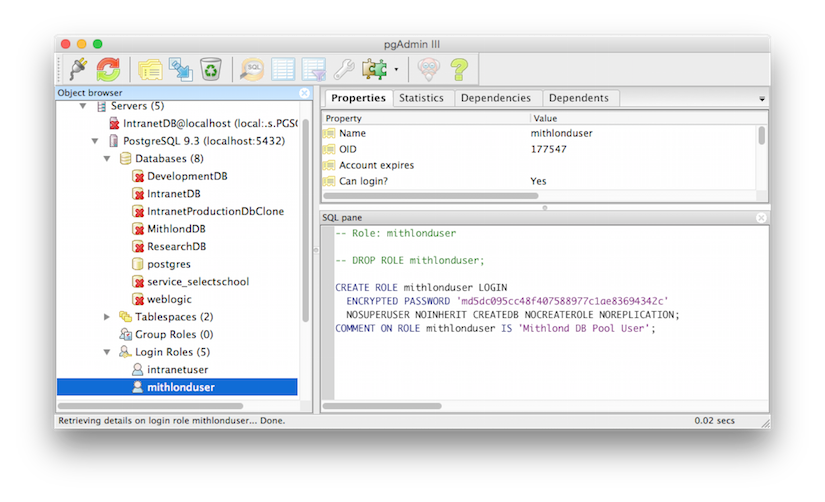

About PostgreSQL
Quoting the PostgreSQL site:
PostgreSQL is a powerful, open source object-relational database system. It has more than 15 years of active development and a proven architecture that has earned it a strong reputation for reliability, data integrity, and correctness. It runs on all major operating systems, including Linux, UNIX (AIX, BSD, HP-UX, SGI IRIX, Mac OS X, Solaris, Tru64), and Windows. It is fully ACID compliant, has full support for foreign keys, joins, views, triggers, and stored procedures (in multiple languages). It includes most SQL:2008 data types, including INTEGER, NUMERIC, BOOLEAN, CHAR, VARCHAR, DATE, INTERVAL, and TIMESTAMP. It also supports storage of binary large objects, including pictures, sounds, or video. It has native programming interfaces for C/C++, Java, .Net, Perl, Python, Ruby, Tcl, ODBC, among others, and exceptional documentation.
Installing and setting up PostgreSQL
Installing a PostgreSQL database is simple, and mostly uses a standard installer. For Linux distributions, use the distribution package for PostgreSQL. For Mac and Windows installations, use the installation instructions below.
1. Download the PostgreSQL 9.3+ installer
The PostgreSQL installation binary is freely available for download over the net. While the application server does not use any overly advanced features within the database, we should use at least version 9.3 when installing the database.
2. Install PostgreSQL (Configuration options)
The PostgreSQL installer is fairly straightforward, but needs 2 non-standard choices which are apparent during the installation:
- Service. The PostgreSQL database listener should be installed as a service on your computer. This requires that you define a database account username (“postgres”) and password (“postgres”). Accept the request to create the operating system account, if asked for it.
- Encoding. When asked to “initialize database” during the installation select the Server Encoding UTF-8. This is important to correctly handle search and text encodings.
3. Create a separate account for the application
It is not recommended to use the database superuser directly from an application server. Instead, a new database role should be created and given privileges to own the database used by the application server. (In newer PG versions, the somewhat confusing term “role” is an account that can be a “user” or “group”).
Launch the PgAdmin III graphical client (or the text console psql tool) and login as the superuser postgresql. When logged in as the superuser, create the required database user mithlonduser by firing the following SQL:
CREATE ROLE "mithlonduser" LOGIN
ENCRYPTED PASSWORD 'md5dc095cc48f407588977c1ae83694342c'
NOSUPERUSER NOINHERIT CREATEDB NOCREATEROLE NOREPLICATION;
COMMENT ON ROLE "mithlonduser" IS 'Mithlond DB Pool User';
You should now have new database role in the database as illustrated in the image below:

The default password for the mithlonduser is MordorRules (note caps; PostgreSQL uses case sensitive passwords).
4. As “postgres” user, Create the database “MithlondDB”
While still being logged in to the PostgreSQL database as the “postgres” user, create the service database for the intranet service using the following command:
CREATE DATABASE "MithlondDB"
WITH OWNER = mithlonduser
ENCODING = 'UTF8'
TABLESPACE = pg_default
LC_COLLATE = 'sv_SE.UTF-8'
LC_CTYPE = 'sv_SE.UTF-8'
CONNECTION LIMIT = -1;
COMMENT ON DATABASE "MithlondDB" IS 'Mithlond Pool DB';
Use the PgAdmin III tool to verify that the database is created:

Log out from the PostgreSQL database